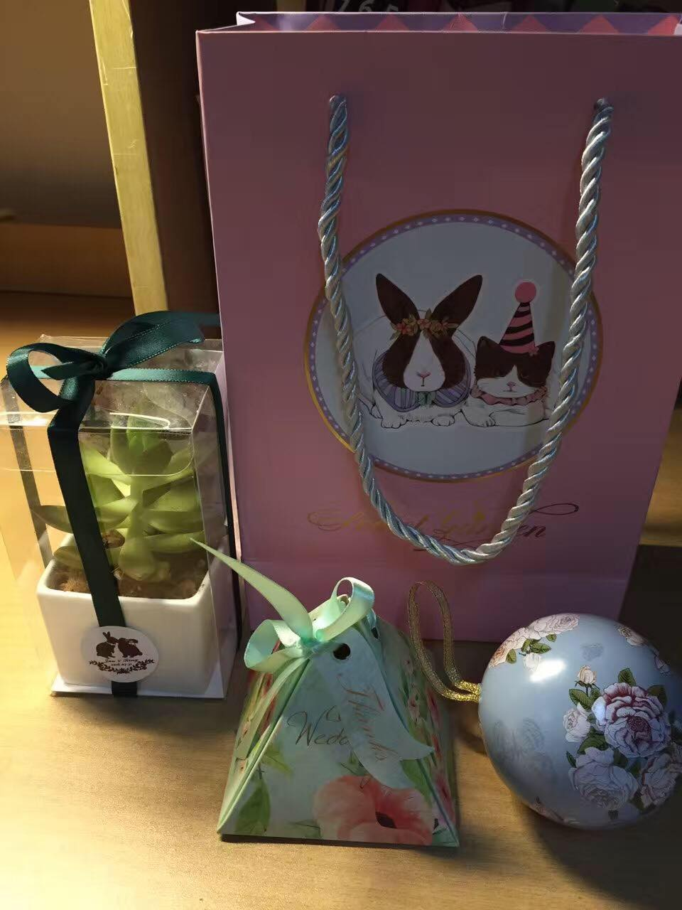
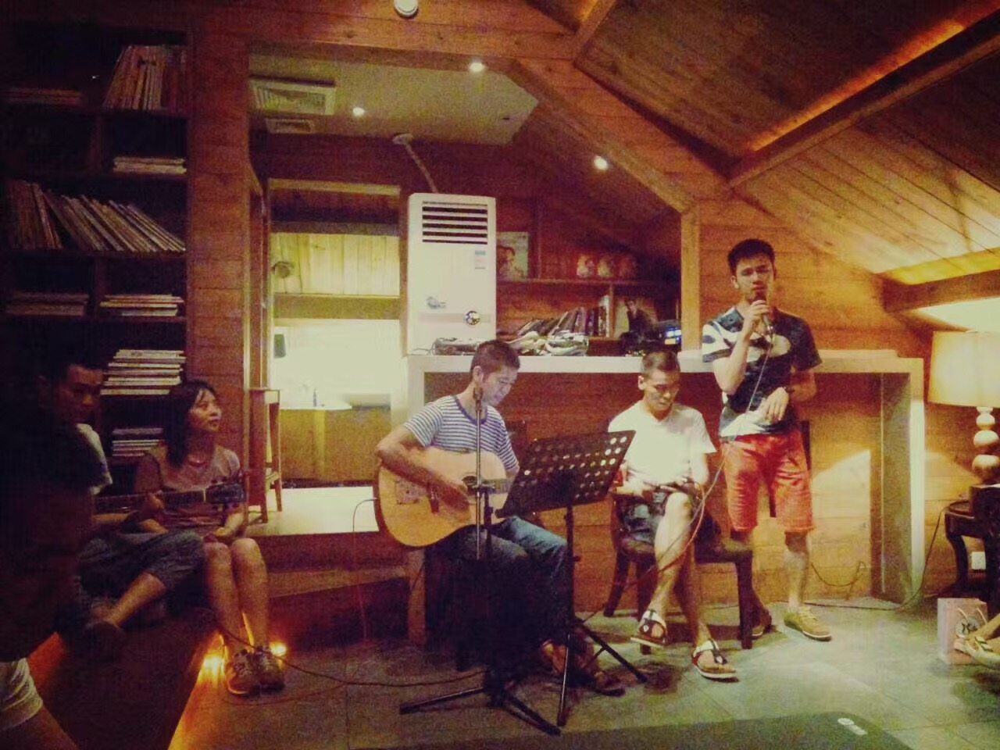

旧幕落下，新幕升起
从过年那会筹划一些婚礼的想法开始，到拍婚纱照、找婚庆、跟拍、摄像、化妆、服装、场地、喜宴、安排接送车辆、亲朋住宿以及最近一个月疯狂地在淘宝上购买各种所需的东西，花费的所有时间和精力随着2016.07.31这一天这一场婚礼一起完美谢幕了，整个婚礼结束之后，我带着我的新娘子坐着地铁回家，想想大概也没有谁了。
两天过去了，仍然没有从7.31的那场梦里醒来。感谢各位来宾，感谢各位工作人员，感谢保障小组的几位童鞋，感谢烁哥的乐队，感谢祝福我们的每一位！
当时家里不建议7.31结婚，因为他们很迷信地说8.1或者7.29更加适合结婚，而且我妈提前半个月就看天气预报说31号那天有大雨（我早就断定天气预报不准，而且提前那么早看根本没用），但我们仍然坚持就是7.31，不管那天什么天气，都一定是这一天，因为2015.7.31这一天我们正式在法律层面上成为了夫妻，当时离七夕很近，但我们觉得非节日的一天更加适合作为我们的纪念日，于是就在那天领了证，当时我就对韵韵说，明年的今天就是我们大婚的日子，我们要办最有意思、最不一样的婚礼，她点头答应。我们的坚持、我们的固执证明了7.31这一天就是属于我们的，非常棒的天气让整个婚礼进行的非常顺利，非常完美。
回礼的准备花费了我们太多的时间和精力，直到婚礼前三天才准备好所有的回礼。长沙这边的一般做法都是准备一盒烟、一袋槟榔和一盒喜糖，当时我们就说要做的不一样，于是韵韵开始了每天长达两小时的淘宝生涯，并且乐此不疲，一盆多肉、一盒果酱和一盒手工喜糖。150份回礼，需要种150盆花，手工装150个喜糖盒子，装150个果酱盒，多亏了几位小同学的帮忙，才能顺利地准备好这些东西，韵韵喜欢兔子，所以袋子也是兔子，多肉的包装上贴着一张兔子贴纸，是我们这次婚礼的logo，是婚庆专门设计的。其实完全可以没必要这么累，直接买现成的就好，但是韵韵坚持要手工做每一个细节，希望每一个细节都做到完美，给宾客们带来不一样的感觉。她做到了！大家都非常喜欢这份回礼。

婚礼主持人希望我们两个在婚礼现场可以真情告白一下，于是婚礼前的一周就没有踏实地睡好过，有一天夜里想着我们在一起的这一年多时间，点点滴滴都历历在目，又失眠了！那一晚想了很多很多，每一件事情的每一个细节都记忆犹新，想了很多想要对她说的话，平时也不会说什么深情的话，因为我也不是一个懂浪漫的人。她一直在忙着买各种各样必须的东西，所以直到婚礼前一天晚上在酒店里等我睡着了才开始准备告白的话，2点钟才睡觉，5点就起来准备化妆了。婚礼正式开始了，我之前准备好的词基本上都忘记了，确实有些紧张，但当我看到美丽的新娘站在我的面前时，我就一点都不紧张了，很自然地说出了我内心最真实的感动，以致于第一位伴娘哭的稀里哗啦的，韵韵的台风比我好，一句一句地讲出了我们在一起的美好！
我和韵韵正式在一起是在马頔的演唱会上，是在2015.03.18，是我们认识后的第十天，一切看起来都很自然而然，没有任何刻意的安排。我一直有一个心愿就是能够办一场live concert，为我心爱的人献上她最爱的歌曲。于是，我决定在婚礼结束后，安排一场民谣风live concert，邀请喜欢唱歌的同学们一起来嗨。concert很成功，氛围非常好，烁哥的现场没的说，在座的每一位都沉浸在了当时的氛围中，我唱了马頔的《南山南》，韵韵唱了hebe的《小幸运》，一切都是那么地棒！

韵韵说她最幸福的时刻就是每天早上醒来，看到身边的我和hare正在酣睡。hare是我们家的小狗，但全家都没有把他当做狗狗来养，我和韵韵是他的爸爸和妈妈，他还有外婆、爷爷和奶奶，每个人都特别爱他，他也是全家的开心果。如果说婚礼有遗憾的话，那就是hare没能来到现场见证他爸爸妈妈最幸福的一刻了。hare之所叫这个名字，是因为他刚刚来家里那会，我正对Air Jordan的Hare球鞋痴迷，Hare本是兔八哥的名字，所以就给他取了这个名字，后来不断地有了很多的名字，张甜心、张甜甜、小黑、心心等等好多的名字，他有一阵子有一些凌乱，突然不知道自己叫什么了。
伴郎和伴娘都非常地帅气和美丽，他们给了我们很多的帮助和支持。伴娘都是韵韵的好闺蜜，有陪她一起长大的，有陪她一起工作的，有一个是这个世界上的另外一个她，她们相似的经历，让她们无话不谈，婚礼现场也就是她哭的最厉害了。伴郎都是我的小兄弟，他们替我扛了很多抢亲时的折磨，替我挡了很多的酒，三位伴郎在敬酒时毫无保留，最后通通倒下，有一点遗憾，没有能够参加最后的concert。感谢你们，因为你们，我和韵韵才会更加幸福！
婚礼结束了，新的生活开始了！今年27岁，也该有一份自己的事业了，不管现在困难有多少，阻碍有多大，我和韵韵都要开始为我们的事业奋斗了！我一直觉得韵韵不仅仅是生活上的伴侣，更是心灵的伴侣，她最懂我的心，也不顾一切地支持我想做的事业，也愿意和我一起来奋斗这份事业。她细心、聪明、好学、热爱生活、眼光独到，所有美好的标签贴在她身上都不为过，她让我看到了更大的世界，让我明白了生活的意义，走进了我的内心深处让我不再孤独，她的勇敢、知性、独立都让我钦佩，给了我莫大的勇气，让我可以更加自信地活在这个世界上，去勇敢地挑战一些更难的事情。人生就是一场奇遇，感谢上帝让我遇见你！谢谢你，韵韵，我爱你！
旧的一幕已经落下，新的一幕正在升起。